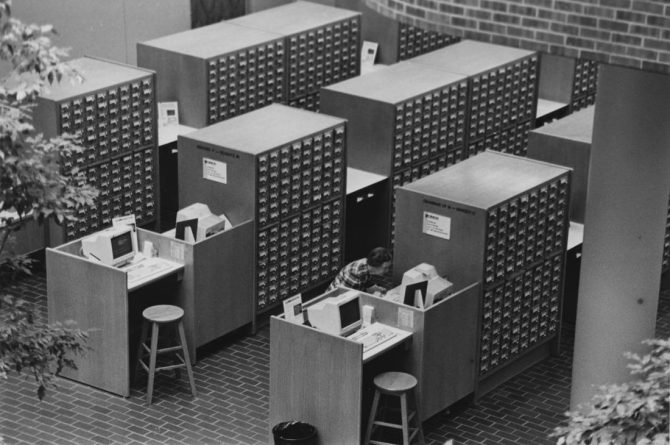

Ray Voelker
Cincinnati & Hamilton County Public Library
ray.voelker@chpl.org
Sierra ILS PostgreSQL (Sierra DB)
↓
Python Scripts (sqlite-utils)
↓
SQLite Database
↓
Datasette → collection-analysis.cincy.pl
— Chalmers Hadley, Head Librarian, CHPL (1927)

245 $a Chart shows rapid rise
of river: Comparison of
present flood with
previous high stages
260 $c 1937
650 $a Floods
650 $a Floods (1937)
650 $a Floods (1913)
650 $a Floods (1884)
773 $a Cincinnati Enquirer
$g 01/27/1937 6:1 pic
Title: Chart shows rapid rise
of river...
Newspaper: Cincinnati Enquirer
Date: 1937-01-27
Page: 6
Column: 1
Image: Yes
Subjects: Floods; Floods (1937);
Floods (1913);
Floods (1884)
Millennium ILS → MARC Export (.mrc)
↓
pymarc + sqlite-utils (Python)
↓
SQLite Database
↓
Datasette → newsdex.chpl.org
Thank you to the Genealogy & Local History Department —
they created the Newsdex data over nearly 100 years.
❤️ Datasette? Let's talk!
Ray Voelker
ray.voelker@gmail.com |
ray.voelker@chpl.org
github.com/rayvoelker